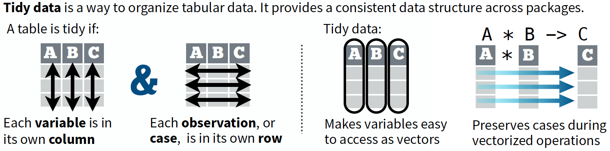

R Bootcamp - Day 1
R & RStudio overview
RNA Bioscience Initiative | CU Anschutz
2025-09-18
Course overview
People
Instructors (Jay Hesselberth and Neel Mukherjee)
TAs (Nathaly Limon de la Rosa and Ilin Joshi)
Syllabus
Read the syllabus.
Your grades are based on attendance / participation, problem sets, and a final project. Your lowest problem set grade will be dropped.
If you are sick, let me and Neel know, and stay home. We will record all classes and make them available on Panopto.
Getting help
All course details are on the website.
We use Canvas for problem set submission & grading.
If you get stuck during class: use the
#classchannel in slack. TAs will come over.If you need help outside of class (in order):
- Ask a question on slack.
- Use TA office hourse Tues/Thurs 1-2:30p.
- Schedule time with the instructors.
Structure of a class
Prior to each block (and sometimes prior to a class), check and complete material in the “Prepare” column on the class schedule.
On the day of class and before class starts, start the day’s “assignment” in Posit Cloud. This will contain blank exercises that you’ll fill in during class.
You’ll also have access to the slides, but it’s probably better for the first few classes to just have the exercises open.
Problem sets
You’ll have a problem set assigned at the end of each class. Our expectation is that you spend a 30-90 minutes on each problem set.
Problem sets will get progressively more difficult.
You can work in groups for problem sets (see the Syllabus), but during the Bootcamp you should avoid it.
If you feel like you’re stuck on something silly, reach out through slack or office hours.
We’ll talk about the problem set at the end of each class. You are welcome to use the remaining class time to start and possibly finish the problem set.
Learning Objectives for the R Bootcamp
Learn the fundamentals of R programming (class 1)
Become familiar with “tidyverse” suite of packages
- tidyr: “Tidy” a messy dataset (class 2)
- dplyr: Transform data to derive new information (classes 3 and 6)
- ggplot2: Visualize and communicate results (classes 4 and 5)
- Putting all of these to use with real data sets (classes 7 and 8)
Practice reproducible analysis using Quarto/Rmarkdown (Rigor & Reproducibility)
A note on R vs Python, and LLMs
You will probably hear people say that one of R/Python is better than the other.
This is false dichotomy. Both languages are useful for different tasks, and both have their strengths and weaknesses.
We will spend time later in the course using LLMs to generate code in both R and Python.
Today’s class
Class outline
Review R basics
- R and RStudio (Exercises #1-2)
- Functions & Arguments (Exercises #3-4)
- Data types and structures (Exercise #5-7)
- R Packages (Exercise #8)
- Quarto (Exercise #9)
- Tidy data
- Go over the first problem set
RStudio - Exercise 1
- We are using RStudio through Posit Cloud for the class.
- Look at RStudio panels one at a time.
- Environment, History, Console, Files, Plots, Packages, Help, etc.
See menu:
Help > Cheat Sheets > RStudio IDE Cheat Sheet
R as a calculator - Exercise 2
- R can function like an advanced calculator
Try simple math.
[1] 17Assign a numeric value to an object.
<-and=are assignment operators.- By convention, R programmers use
<-. x <- 1reads “set the value ofxto 1”.
= and == are two different operators.
a
=is used for assignment (e.g.,x = 1)a
==tests for equivalence (e.g.x == 1says “doesxequal 1?”)
Functions and arguments - Exercise 3
- Functions are fundamental building blocks of R
- Most functions take one or more arguments and transform an input object in a specific way.
- Use tab-completion to find functions!
Writing a simple function - Exercise 4
Data types - Exercise 5
- There are many data types in R.
- We’ll mainly use numeric, character, and logical.
Vectors - Exercise 6
Vectors are a core R data structure.
A vector is an ordered collection of elements of the same type (e.g. numeric, character, or logical).
Later you will see that every column of a
data.frame/tibbleis a vector.Operations on vectors propagate to all the elements of the vectors.
Let’s create some vectors.
- The
cfunction combines values together (e.g.,c(1,2,3))
Data frames
A
data.frameis a rectangle, where each column is a vector, and each row is a slice across vectors.data.framecolumns are vectors, and can have different types (numeric, character, factor, etc.).A
data.frameis constructed withdata.frame().
[1] "data.frame" x y
1 1 2
2 2 4
3 3 6Tibbles
A tibble is a modern reimagining of the data.frame, keeping what time has proven to be effective, and throwing out what is not.
Tibbles are data.frames that are lazy and surly: they do less (i.e. they don’t change variable names or types, and don’t do partial matching) and complain more (e.g. when a variable does not exist).
Data frames & tibbles - Exercise 7
Create a data.frame and tibble.
Now echo the contents of df and tbl to the console and inspect
Some useuful functions for inspecting data.frames and tibbles:
[1] 3[1] 4[1] 3 4[1] "chrom" "start" "end" "strand"Rows: 3
Columns: 4
$ chrom <chr> "chr1", "chr1", "chr2"
$ start <dbl> 200, 4000, 100
$ end <dbl> 250, 410, 200
$ strand <chr> "-", "-", "+"R packages - Exercise 8
An R package is a collection of code, data, documentation, and tests that is easily shareable.
A package often has a collection of custom functions that enable you to carry out a workflow. eg. DESeq2 for RNA-seq analysis.
The most popular places to get R packages from are CRAN, Bioconductor, and Github.
Once a package is installed, one still has to “load” them into the environment using a
library(<package>)call.
Let’s do the following to explore R packages:
library(tidyverse)- Examine the “Environment” panel in Rstudio
- Explore Global Environment
- Explore the contents of a package
Tidyverse overview
- Tidyverse is an opinionated collection of R packages designed for data science.
- All packages share an underlying design philosophy, grammar, and data structures.
- Comprised of a few dozen packages - we will focus mainly on tidyr, dplyr, and ggplot2
Tidyverse overview
Tidyverse workflow

What is tidy data?
“Tidy datasets are all alike but every messy dataset is messy in its own way.”
— Hadley Wickham
Quarto Exercise - Exercise 9
Quarto is a fully reproducible authoring framework to create, collaborate, and communicate your work.
Quarto lets you render Rmarkdown documents (in addition to Jupyter notebooks, etc.)
Quarto supports a number of output formats including pdfs, word documents, slide shows, html, etc.
A Quarto document is a plain text file with the extension
.qmdand contains the following basic components:- A YAML header surrounded by
---. - Chunks of R code surrounded by ```.
- Plain text structured with markdown formatting like
# headingand*italics*.
- A YAML header surrounded by
Let’s do the following to explore Quarto documents:
- Create a new Quarto document
- Render the document to see the output
Problem sets and submission
Your first problem set is in ps-01.qmd